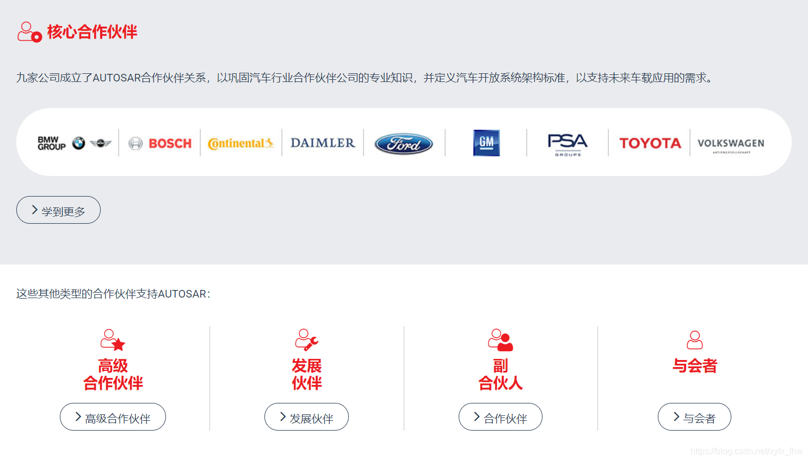
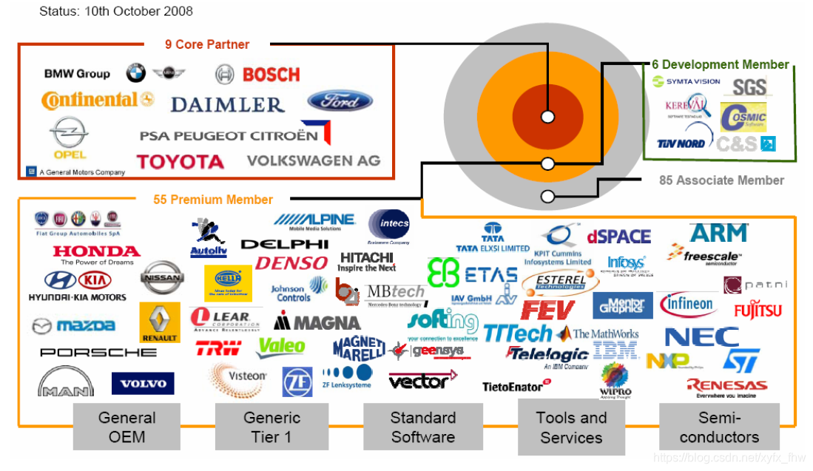
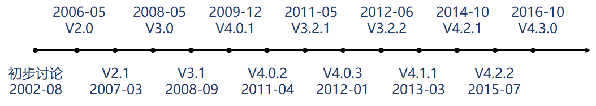
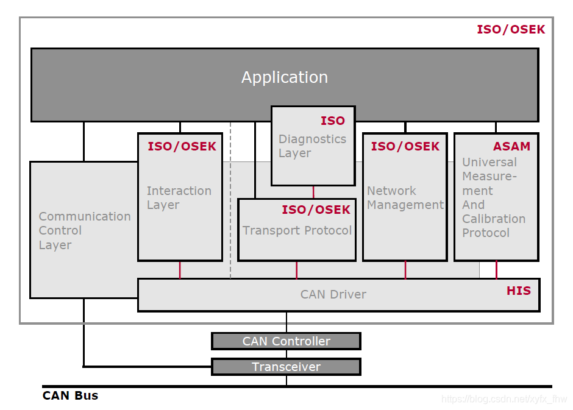
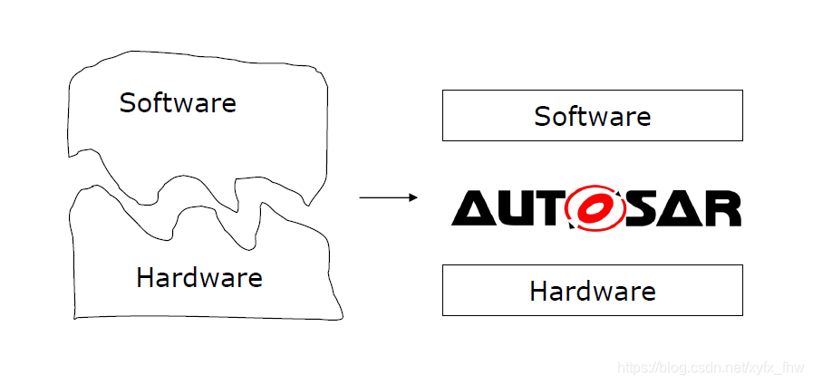
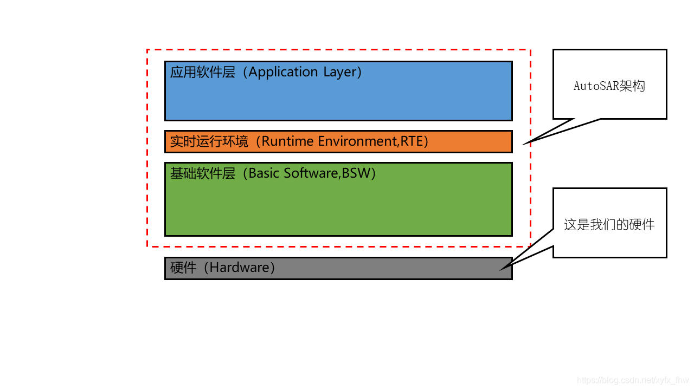
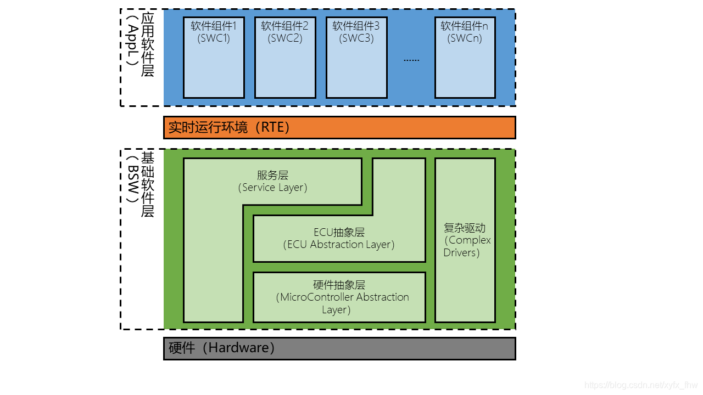
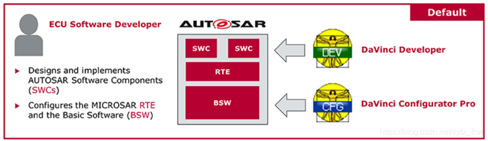

一、AutoSAR 简介
1.1 什么是 AutoSAR
AUTOSAR 是 AUTomotive Open System ARchitecture 的简称，中文译为"汽车开放系统架构"。它是由全球主要汽车制造商、零部件供应商及工具开发商共同制定的汽车电子软件开发标准。
大白话来讲：AutoSAR 将汽车电子控制单元（ECU）的软件底层做了一个标准的封装，使得大家都能共用一套底层软件，只需修改部分参数即可匹配不同硬件和应用层。用户只需专心负责应用层功能开发，底层交给 AutoSAR 工程师即可。
通俗比喻：AutoSAR 就像"一套写得比较好的底层软件"——它实现了硬件驱动的封装（类似 STM32 的库）和操作系统功能，用户只需基于它开发上层应用（类似基于安卓开发 App）。
1.2 AutoSAR 成员
AutoSAR 联盟的成员大体可分为三类：
核心成员（Core Partners）：包括宝马、博世、大陆、戴姆勒、福特、通用、标致雪铁龙、丰田、大众等，主导标准的制定与发展方向。
高级成员（Premium Partners）：深度参与标准开发，具有较高的话语权和贡献度。
发展成员（Associate Partners）：参与标准的应用与推广，可获取早期规范版本。


二、发展历程
2.1 历史发展
AutoSAR 联盟成立于 2003 年，致力于为汽车电子软件开发建立统一的标准化架构。历经多年发展，已发布 Classic Platform（面向传统分布式 ECU，基于 OSEK 操作系统）和 Adaptive Platform（面向高性能计算平台，支持 POSIX 与 SOME/IP）两大平台。

2.2 使用 AutoSAR 前的状态
原始状态（敲代码法）：开发人员直接手写代码驱动硬件，目前部分简单 ECU 仍在使用。缺点明显，主要源于软硬件耦合严重：
① 开发效率低下 ② 开发周期长 ③ 代码协作与维护困难 ④ 可重用性差（换硬件几乎要重写） ⑤ 代码量增加后质量下降。
进阶状态（架构师设计 + OS 封装）：由有经验的架构师设计优化架构，结合操作系统（如 OSEK）对代码进行封装，可大幅提升效率。但仍存在不足：
① 不同客户需求差异大，重用性依然不好 ② 软件耦合仍然存在，方案优劣与架构师能力直接挂钩。

2.3 使用 AutoSAR 后的状态
软硬件隔离：无论使用 NXP、英飞凌还是 TI 的芯片，无论硬件如何设计，都无需修改应用代码，只需通过 AutoSAR 配置工具告诉它"换硬件了"，AutoSAR 会自动匹配硬件驱动。

AutoSAR 的优势（对应使用前的缺点）：
① 缩短开发周期，提高开发效率 ② 代码重用性大大增加 ③ 多人并行开发更易实现，维护方便 ④ 提供图形界面配置工具（如 Vector DaVinci），无需手写底层代码，生成代码质量有保证。
三、核心架构
AutoSAR Classic 架构自上而下分为三层，通过标准化接口实现各层解耦：

3.1 应用软件层（Application Layer）
位于架构最上层，包含若干软件组件（SWC, Software Component），每个 SWC 实现具体的车辆功能（如电机控制、电池管理等）。组件之间通过端口（Port）进行通信，不直接访问底层硬件。
3.2 实时运行环境（RTE, Runtime Environment）
RTE 是应用层与基础软件层之间的"通信中间件"，提供标准化接口。它实现了组件间的位置透明通信——无论 SWC 部署在哪个 ECU，都能通过 RTE 透明地收发数据，无需关心底层实现。

3.3 基础软件层（BSW, Basic Software）
BSW 提供操作系统、通信协议栈、诊断、存储、输入输出等通用服务，自顶向下又细分为：服务层（Service Layer）、ECU 抽象层（ECU Abstraction Layer）和 MCAL 层（微控制器抽象层）。MCAL 直接与硬件交互，是整个架构的硬件驱动基础。

四、AutoSAR 目标
AutoSAR 的核心目标是推动汽车软件的标准化与规范化，具体包括：
1. 标准化接口：定义统一的软件接口与架构规范，使不同供应商的软件组件能够无缝集成。
2. 软硬件解耦：应用软件不依赖于具体硬件平台，可在多个 ECU 间复用与迁移。
3. 提升复用性：通过组件化设计，减少重复开发，缩短产品上市周期。
4. 可扩展性：支持从低端 MCU 到高性能 SoC 的多种硬件平台，满足不同车型与功能需求。
5. 质量与安全：标准化架构与流程有助于提高软件质量，并满足功能安全（ISO 26262）与信息安全（ISO/SAE 21434）要求。
五、工具链
AutoSAR 的开发依赖于一系列工具链，主要工具包括：
Vector DaVinci：业界主流的 AutoSAR 配置工具套件，包含 DaVinci Developer（SWC 设计）、DaVinci Configurator（BSW 配置）等模块，支持图形化配置并自动生成代码。

MATLAB / Simulink：主要用于应用层算法建模与代码生成，可与 AutoSAR 工具链集成，实现从模型到代码的自动化开发。
其他工具：还包括 EB tresos（Elektrobit 提供的 AutoSAR 配置工具）、IBM Rational Rhapsody（系统建模）等，不同 OEM 与供应商会根据需求选择合适的工具组合。
通过工具链的配合，开发者可以从需求建模、软件架构设计、BSW 配置到代码生成实现全流程自动化，大幅提升开发效率与代码质量。